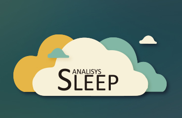
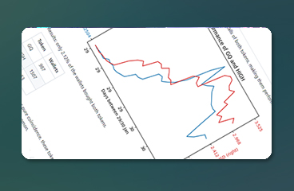

Data Extraction:
I have experience in collecting and extracting data from various sources, including databases, APIs, and web scraping. I have worked with tools such as Python and SQL to access data and automate the collection process.
Data Cleaning:
Data cleaning and processing are a fundamental part of my work. I have experience using tools such as Excel, Python, and SQL to perform tasks such as removing outliers, imputing missing data, and normalizing data.
Visualization:
I have created customized visualizations and dashboards using tools such as Tableau, Power BI, Cognos, and Python. I have experience in creating interactive visualizations that allow users to explore data in an intuitive way.
Some of the technologies I have experience working with:
- Python
- SQL
- Excel
- Power BI
- Tableau
- Git
These are some of my projects, you can find more of my work on my Github profile.

Personal project that arises from reading a book. The objective is to see how external and demographic factors influence the quality of sleep, and how to improve it.
Investment Dashboard for Nox Beyond, that extracts information from the blockchain to display digital collectibles owned and their corresponding values. Nox Beyond is based on Avalanche

Personal project to investigate movements related to GQ and HIHG, gathering information to validate rumors surrounding them. I also evaluated the quality of the GQ and its holders.